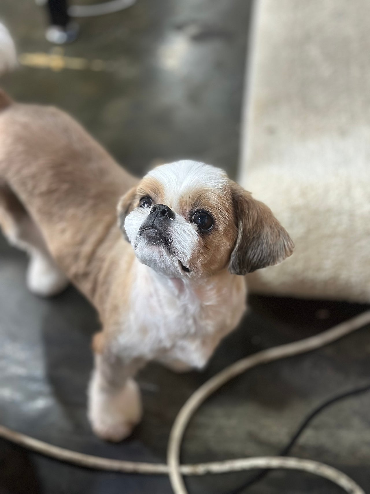
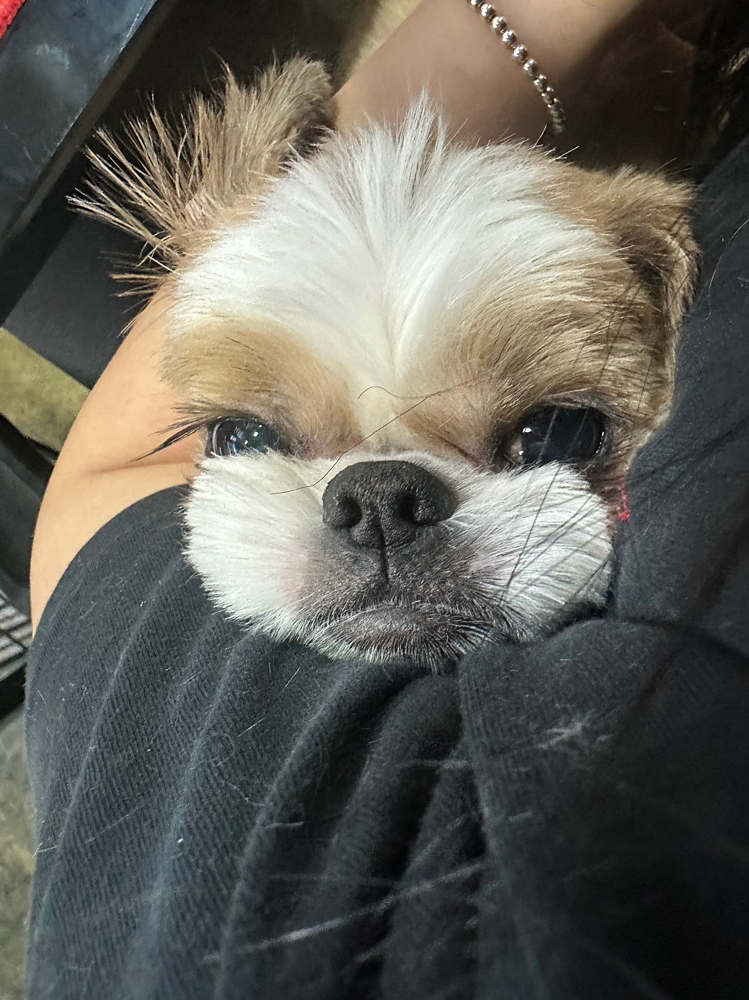
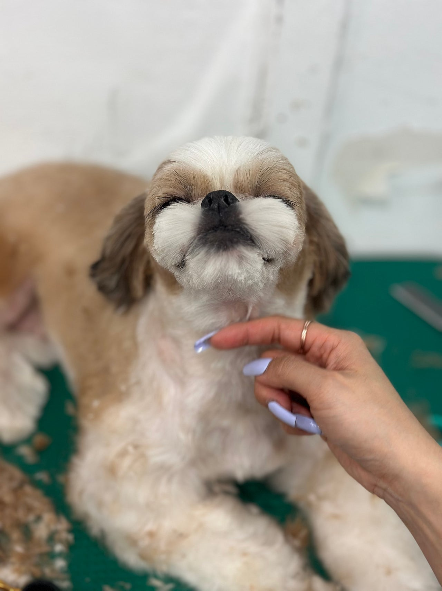
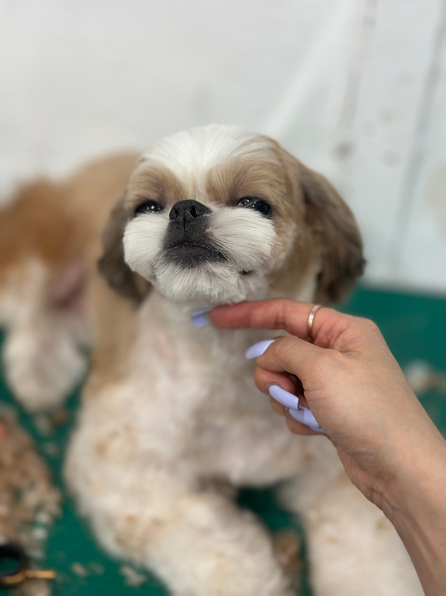
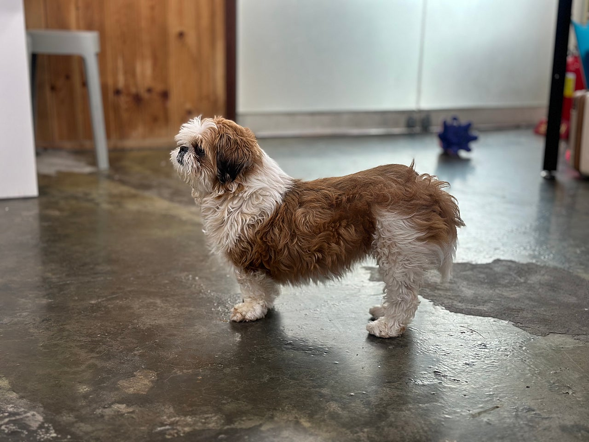

복실복실 털이 많이자란 나롱이 여름맞이 빡빡이 미용!!!




꼬순내 나게 생긴 나롱이,,실제로도 꼬순내 폭발인 나롱이!!!나롱이는 시츄 네가족중 엄마였어요https://naver.me/Gfr28Ynu
아빠였던 호롱이, 아들 해태, 딸 초롱이는모두 좋은 가족을만나 입양이 됐고이제 엄마 나롱이만 남았답니다.

미용전 복실 복실 나롱쓰복실복실 기름기 가득한 털을 싸악 밀고얼굴도 동글동글 시츄답게 다듬어주었어요(더 욕심내다가 망한건 비밀,,,)여름이라 덥길래 확 밀어줬는데나롱이도 시원한지 좋아하더라구요 ㅎㅎ발은 면봉컷으로!!!!그냥 있어도 귀여운 나롱이인데그 귀여움이 두배가 됐답니다~~~( 미용후 며칠뒤,,제 어깨는 나가서 돌아오질 않고 있답니다..ㅎㅎ )0505-464-1004
댓글 17
미용 전 복실 나롱쓰가 그리우면서도 시원해 보여요.
나롱이, 좋은 사람만 만나자.
나롱이만 좋은 가족을 만나면 네 가족의 이야기가 이어지겠어요.
외롭지 않게, 좋은 손에서 자라길.
꼬순내가 난다는 소개, 복실했던 털 이야기랑 잘 붙어요.
사진 보는 동안에도 좋은 가족이 생기길 빌었어요.
면봉컷 발랑 동그란 얼굴, 글이 사진을 정확히 말해요.
아프지 말고 잘 자라라.
시츄답게 동그란 얼굴로 다듬었다는 글, 사진에서 확인돼요.
어디 아프지 말고 편히 지내.
더워서 밀어 줬다는 이유가 여름 미용이라는 제목이랑 맞아요.
나롱이도 아프지 말고 무럭무럭.
시츄 엄마 나롱이 미용 일기, 사진과 사연이 같이 있어요.
복실 전과 민 후가 같이 있는 글이라 변화가 분명해요.
시츄 네 가족 중 엄마였고, 호롱이 해태 초롱이는 입양됐다는 이야기가 마음에 남아요.
이제 엄마 나롱이만 남았다는 문장 읽고 사진이 더 오래 보였어요.
발은 면봉컷이라는 디테일이 미용 후 사진이랑 맞아요.